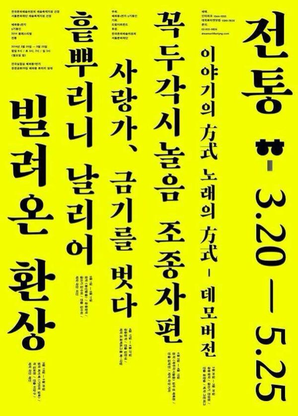

그린피그 > 아카이브 > 이야기의 方式, 노래의 方式. -데모버전

'전통'이라는 화두로 판소리 〈적벽가〉를 해석한 작품. 적벽가를 배우기 위해 말의 뜻을 찾고, 사투리를 배우고, 손짓을 과장해 따라 해 보면서 판소리를 이해하고 표현해 내는 과정 자체를 무대에 올린다. 전통에 임하는 자세로 배우들은 공연 내내 무릎을 꿇고 있고, 객석에서 휴대폰 벨이나 진동이 울리면 공연이 중단된다. 혜화동1번지 5기 동인 가을페스티벌에서 시작해 2016년 요코하마 TPAM에 초청되었다.
2014.3.20–30 / 연극실험실 혜화동1번지
2016.2.10–14 / 요코하마 KAAT - TPAM 2016
이전: 〈젊은 후시딘〉 | 다음: 〈1984〉
아카이브로 돌아가기 | 아무 작품이나
발행일 2026.11.9